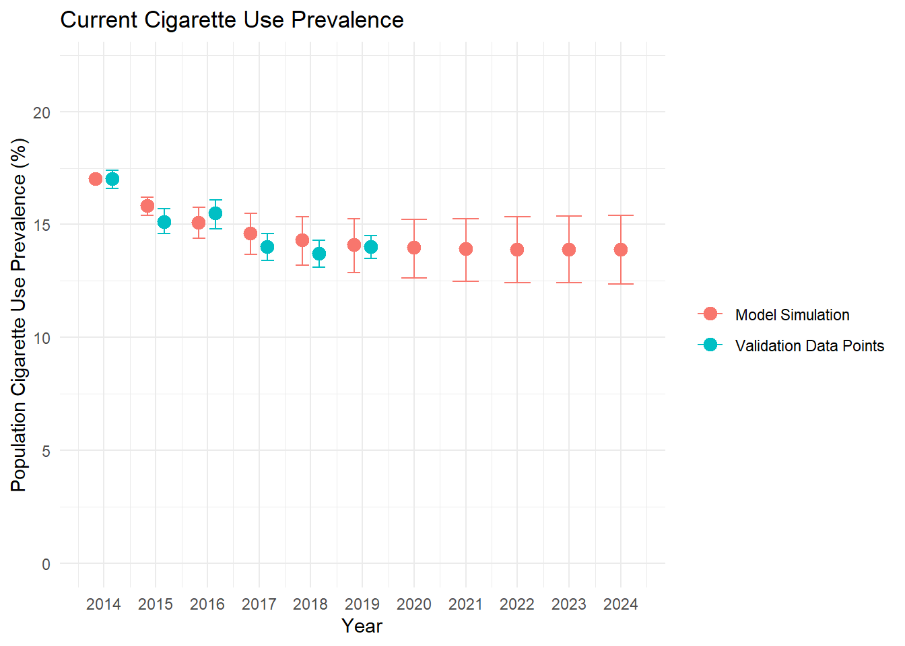

Chapter 9 Results
Now that we have run the model and our primary scenario analyses, we want to look at the results.
9.1 Calibration Confirmation
First, we want to make sure that our calibrations worked properly. We calibrated to ensure our model accurately reflected on population growth and changes in cigarette use prevalence. The plots below display the modeled data versus actual historical data to confirm calibrations.
9.1.1 Population Growth
We calibrated the model population change to the actual population change from 2014-2015 (~0.7%) and from 2018-2019 (~0.5%). These calibration data points are highlighted by green dots. The actual, real world population change for the years in-between are indicated by the blue dots. The red dots show (and corresponding confidence intervals) display the annual population change for the model simulations. US annual population change was extracted from the World Bank
9.1.2 Current Cigarette Use
We then want to see the simulated cigarette prevalence over time alongside the actual values (to ensure the model is performing well). We calibrated the model to the 2019 cigarette prevalence of 2019 (14%) and we initiated the model at the 2014 cigarette use prevalence (17%) – these data points (along with confidence intervals) are presented in green. We also display the cigarette prevalence for the years in between in blue. The simulated values from the model are presented in red. The actual cigarette prevalences and their confidence intervals were extracted from the annual CDC MMWR tobacco product use reports.

9.1.3 Former Cigarette Use
Finally, we calibrated the model to the former cigarette use rate in 2019 (20.9%) and initiated the model at the former smoker level in 2014 (20.9%). While estimates nor confidence intervals for the former smoker prevalence in the US are generally not published by the CDC or in the literature, data from SAMHSA indicates that the former smoker prevalence has remained roughly the same over this time period. As such we only present the calibration data points alongside the actual former smoker rates.
NB: It is a bit interesting that the cigarette use prevalence has declined while the former smoker prevalence has remained relatively static. This appears to be explained by the sudden decline in youth smoking, as the smoking prevalence for 18-24 years olds plummeted from around 17% in 2014 to 8% in 2019. This provides some indication that the declines in prevalence have been explained by an injection of never smokers into the population, as opposed to substantial increases in the former smoker population.
9.2 Scenario Analysis Results
Our primary comparison scenario is running the model and assigning every person the relative risk protectivity of being in the highest income group. This represents the scenario in which every person is exposed to the most protective income exposure. This allows us to calculate a population attributable fraction for the contribution of income level on cigarette prevalence.
9.2.1 Cigarette Prevalence
First we want to display the annual cigarette prevalence for the standard model simulation versus the high income scenario. This will inform us the direction of the impact of income.
9.2.2 Population Attributable Fraction
Next, we want to calculate the population attributable fraction of income on cigarette-years. We calculate the PAF for 1, 5, and 10 years after baseline. As well, it is of interest to better understand the contribution of income to different smoking transitions. So we also display the PAF specific to never smokers at t=0, current smokers at t=0, and former smokers at t=0. Entries into the model (emerging adults) are included in the PAF where they start (i.e., if someone enters the model at t = 2 as a never smoker, than their transitions in the future are incorporated into the never smoker PAF). As we can see, income has a far greater attributable effect on initiation (i.e., never smokers transitioning to current smoking) than either other transition.